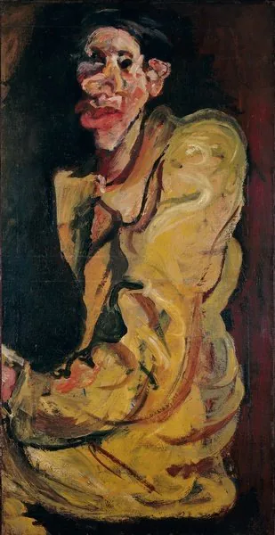

Amedeo Modigliani
Femme aux yeux bleus
Notice et collection du musée
ŒUVRES & REGARDS
Des visages, des gestes, des présences. Explorez une sélection d’œuvres qui invite à regarder autrement.
Femme aux yeux bleus
Notice et collection du musée

Chaim Soutine
Notice et collection du musée

Grotesque
Notice et collection du musée

Petite danseuse
Notice et collection du musée

Havana
Notice et collection du musée

Femme à la robe bleue
Notice et collection du musée
Sélection iconographique issue de collections publiques, présentée pour découvrir les artistes. Ces œuvres ne sont pas proposées à la vente par la galerie. Chaque œuvre renvoie à la notice de son musée, où figurent sa provenance et ses informations détaillées.
UN HORIZON ARTISTIQUE
La galerie s’intéresse aux langages de l’art moderne et expressionniste. Les artistes évoqués dans son projet en dessinent les différentes sensibilités.
Contactez Paul Dechewsky pour échanger sur vos intérêts artistiques et les œuvres disponibles à la galerie.